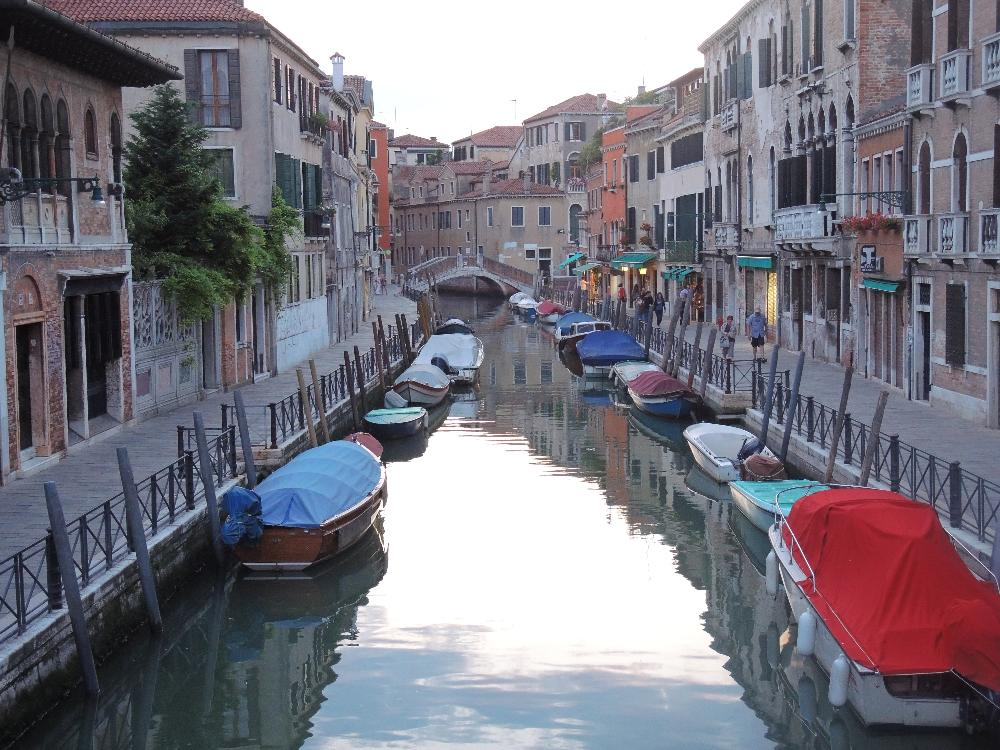
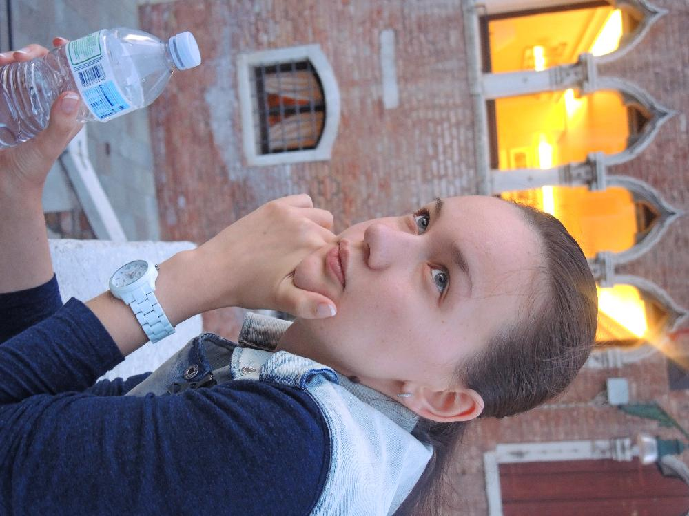
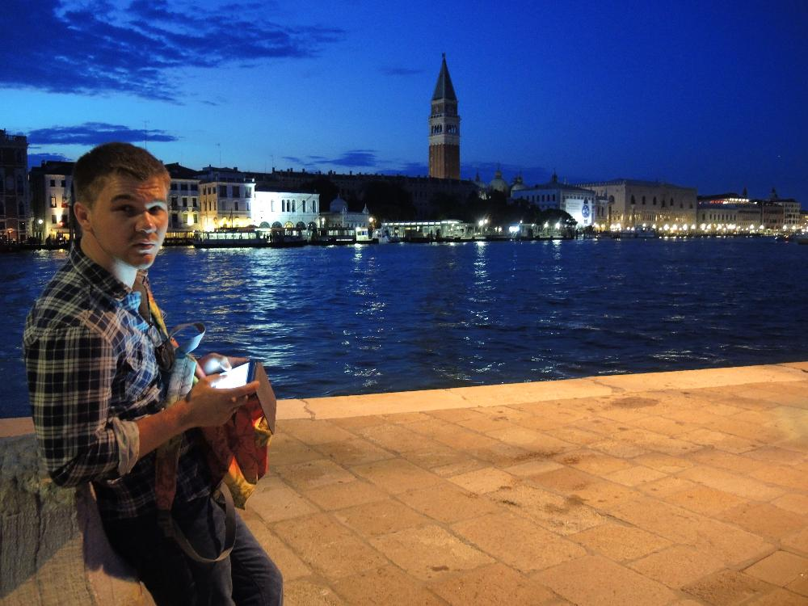

Венеция. Второй день.
17.06.2014
Поставлена туристическая цель - дойти до крайней южной и крайней вотсточной точки
Цель выполнена...

17.06.2014
Поставлена туристическая цель - дойти до крайней южной и крайней вотсточной точки
Цель выполнена...
Фото с помехой. Второ-свадебное платье прилетело в Венецию.
Немного потерялись. Все до последней улицы города отмечены на картах. Город сформировался давно, и новостроек почти не существует.
Не прикаких обстоятельствах не выбрасывай в мусорку стул и стиральную машину
Забота о собаках

Типо подкатил такой на гондоле в ресторан
Просто гондола, без обвесов и всякой ерунды
Герб Венеции - лев, читающий книгу, с крыльями - очень воинственно. Это тебе не упавшая ваза в Воронеже. Но воронеж и моложе Венеции в 4 раза. Может через 1000 лет наша ваза тоже станет воинственно читать с крыльями.
"Следуй за мной" повернулся
Карта vs Гугл-карта
 Сколько время? Без 5 минут рак.
Сколько время? Без 5 минут рак.
 Паркинг. Как и в других городах в Венеции большие проблемы с парковками, но только вот для катеров.

Приеду в Воронеж и все переделаю...
 Самая крайняя восточная точка
Там камень на который очень хочется сесть
Самосъем
Пустынно. Здесь есть уголки где можно скрыться от туристов
Вроде из этого собора в каком-то фильме выходила Анджелина Джоли и садилась в гондолу
Завтра на остров Мурано. Говорят, там еще не такие штуки из стекла делают